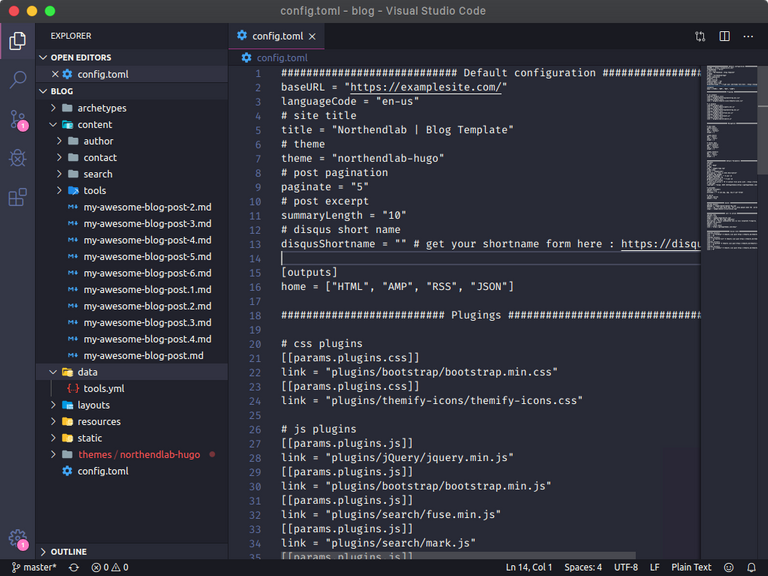
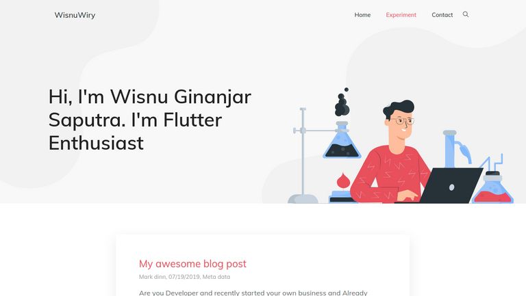

Table Of Content
Sebelumnya apakah sudah tahu tentang Blog Personal / Web Portofolio?
Jika belum mari kita bahas.
Web Blog Personal biasanya diginukan sebagai catatan blog pribadi seseorang bisa juga blog tersebut dijadikan sebagai web portofolio mereka seperti pengalaman pribadi, hasil project, menceritakan keseharian, dan lain-lain selama ini yang dikerjakan.
Tapi kali ini kita akan membahas dan mencoba bagaimana membuat sebuah blog pribadi/personal dengan Hugo dan Github Pages. Tapi bagaimana jika OS saya berbeda dengan di tutorial ini? Tenang saja saya akan membuat tutorial ini dari berbagai OS desktop yang sering digunakan mulai dari Linux, Windows, dan Mac OS. Jadi Anda tidak perlu khawatir dengan dengan perbedaan OS untuk intall ini.
Sebelum kita memulai untuk membuat sebuah blog Anda harus mempersiapkan beberapa hal diantaranya berikut:
Semua point-point tersebut wajib Anda penuhi, jika Anda belum punya akun github bisa membuat akun github terlebih dahulu, isi semua field yang disuruh. Setelah itu Anda perlu install git di desktop Anda, berikut caranya install git:
Install Git
1. Linux
Buka Terminal > paste kode berikut:
$ sudo apt install gitDalam tahap ini pastikan laptop terkoneksi sama internet karena proses install ini membutuhkan internet.
2. Windows
Untuk proses install git di windows Anda cukup download saja software gitnya terlebih dahulu silahkan kunjungi website download git resminya. Kemudian setelah di download install terlebih dahulu. Saya anggap Anda sudah selesai install. Langsung saja ke step berikutnya.
3. Mac Os
Pada Mac Os Anda bisa install git lewat HomeBrew, dengan mengetikkan command berikut di terminal/bash.
$ brew install gitJika proses install git sudah selesai Anda bisa cek apakah git berhasil di install dengan benar atau tidak, untuk cek Anda bisa buka Terminal atau git(bagi windows). Lalu ketikkan command berikut:
$ git --versionLalu jika proses install berhasil akan muncul result berikut:
git version 2.20.1pada version number tersebut tidak mesti sama semua, itu versi git Anda yang telah diinstall, bisa jadi Anda install versi lebih baru/lalu. Sampe proses ini kita sudah berhasil menginstall salah satu software yang wajib yaitu git. Dan proses selanjutnya kita juga perlu install Hugo.
Install Hugo
Apa sih itu Hugo?
Hugo yaitu salah satu tool static site/website generator yang sangat powerfull karena speed building nya. Dan Hugo ini cukup lah mudah digunakan. Dan beberapa faktor mengapa pilih Hugo ini sebagai tool static site generator. Inilah alasanya:
- Mudah
- Cepat
- Secure
Dari beberapa alasan tersebut cukuplah meyakinkan untuk memilih Hugo ini sebagai static site generator. Untuk membuat web dari Hugo ini kita perlu juga memahami sintaks markdown karena di hugo ini konten post ini digenerate dari markdown ke html. Mari kita langsung install hugo ini. Berikut langkah-langkah untuk menginstall Hugo:
Linux
Untuk install Hugo di linux ini sangat mudah ya cukup ketikkan command berikut ini di terminal:
$ snap install hugoTunggu sampai proses selesai install install ini membutuhkan koneksi internet ya.
Windows
Untuk windows ini kita akan menginstall hugo dengan choco bisa di install terlebih dahulu juka belum di install. Jika sudah maka paste kan command berikut ini di CMD:
$ choco install hugo -confirmProses download dan install memerlukan waktu tunggu saja beberapa menit.
Mac Os
$ brew install hugo
Bila ingin mengejek apakah sudah tersintall atau belum bisa ketikkan command berikut ini di Terminal/CMD:
$ hugo versionLalu jika berhasil akan output berikut ini:
Hugo Static Site Generator v0.62.1/extended linux/amd64 BuildDate: unknownSetelah selesai proses install hugo nya mari kita siapkan text editornya, karena text editor ini sangat penting dalam pembuatan web kali ini. Untuk text editor Anda bisa menggunakan beberapa text editor saya contohkan ini beberapa text editor yang bisa Anda gunakan SublimeText, VS Code, Atom, dll. Tapi pada kali ini saya akan menggunakan text editor VS Code. Jika salah satu tersebut belum Anda install saya sarankan install terlebih dahulu. Langsung saja kita ke step berikutnya yaitu membuat project baru dengan Hugo.
Buat Project Baru dengan Hugo
Untuk membuat project baru ini cukup ketikkan command berikut:
$ hugo new site nama_projectUntuk
nama_projectitu bisa terserah Anda karena itu sebagai nama project Hugo Anda.Tapi untuk contoh saya menamai project saya dengan nama blog berikut contohnya:
$ hugo new site blogSetelah selesai proses pembuatan project baru, buka folder project tersebut ke text editor Anda. Pada kali ini saya menggunakan text editor VS Code. Dan ini hasil project dan strukturnya setelah di buka text editor seperti ini.

Setelah sampai proses ini kita juga perlu install tema untuk mempercantik web kita ini. Di Hugo ini sudah disediakan banyak tema bisa dilihat di sini. Jadi kita lebih enak tidak perlu susah payah membuat dari nol. Tapi pada kali ini saya menggunkan tema Northendlab, Anda boleh kok pilih sesuai keinginan proses install nya pun sama.
Untuk install tema biasanya sudah disediakan dokumentasinya di tiap tema di hugo. Mari langsung install temanya:
Pertama kita clone/download temanya dulu. Ketikkan command berikut pada terminal atau Terminal pada VS Code.
Note: Bila menggunakan terminal/CMD tidak lewat text editor sesuaikan dulu PATH folder projectnya.
Berikut untuk download temanya:
$ cd themes $ git clone git@github.com:themefisher/northendlab-hugo.gituntuk proses download ini berbeda-beda ya sesuaikan dengan temanya.
Copy example content dan dan config. Untuk ini anda perlu copy beberapa file dari contoh temanya, dan yang Anda harus copy yang file & folder dari folder themes/northenlab-hugo/exampleSite:
copy folder content, data, dan file config.toml. Seperti pada gambar berikut ini:

Hugo Strukture Content Example
Kemudian pindahkan dan paste folder dan file tersebut ke root project. Maka hasilnya seperti ini:

Contoh Hasil Setelah copy example site dari tema
Dan untuk mencoba / run project hugo kita ini cukup ketikkan command berikut ini:
$ hugo serverKemudian lihat di browser dengan URL http://localhost:8080/ atau URL lain yang seperti di terminal. Berikut contoh hasilnya:

Sampai saat ini kita sudah berhasil build site. Nah tapi content hasilnya itu kan tidak sesuai ekspektasi kan? bila ingin merubah Anda edit saja pada file config.toml pada root project. Atau bila ingin mempelajari selengkapnya tentang hugo bisa kunjungi ke dokumentasi hugo.
Selanjutnya kita akan mempublish Web kita ke Github Pages. Nah langkah ini lah kita perlu untuk menggunakan akun github.
Deploy ke Github Pages
Pertama-tama kita perlu login dulu ke github. Setelah login kita buat repository dulu
Klik tombol plus>New Repository
Dan buat repository dengan template seperti ini:
username_github.github.io
Untuk username_github tersebut sesuaikan dengan username Anda sendiri.

karena username saya wisnuwiry maka saya membuat repository dengan nama wisnuwiry.github.io. Kemudian klik create repository.
Setelah proses pembuatan repo selesai kita buat dulu file untuk deploy ke github kita. Buat file dengan nama deploy.sh di root project Anda. Dan paste kan script ini di file tersebut.
#!/bin/sh
# If a command fails then the deploy stops
set -e
printf "\033[0;32mDeploying updates to GitHub...\033[0m\n"
# Build the project.
hugo # if using a theme, replace with `hugo -t <YOURTHEME>`
# Go To Public folder
cd public
# Add changes to git.
git add .
# Commit changes.
msg="rebuilding site $(date)"
if [ -n "$*" ]; then
msg="$*"
fi
git commit -m "$msg"
# Push source and build repos.
git push origin masterKemudian inisialisasikan project anda ke git dengan ketikkan command berikut:
$ git init
$ git submodule add -b master https://github.com/wisnuwiry/wisnuwiry.github.io.git public Pada proses tersebut command add submodule ganti dengan format berikut ini:
$ git submodule add -b master https://github.com/<USERNAME>/<USERNAME>.github.io.git publicKemudian ketikan command lagi untuk mendeploy web kita ke internet:
$ chmod +x deploy.sh
./deploy.shHasil bisa Anda lihat di web https://wisnuwiry.github.io.
Selamat mencoba.
Comment: